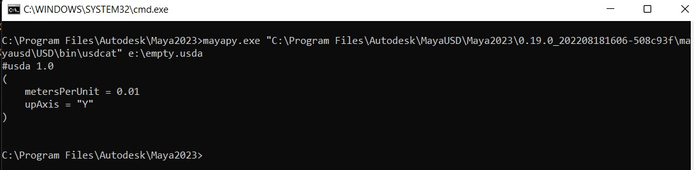
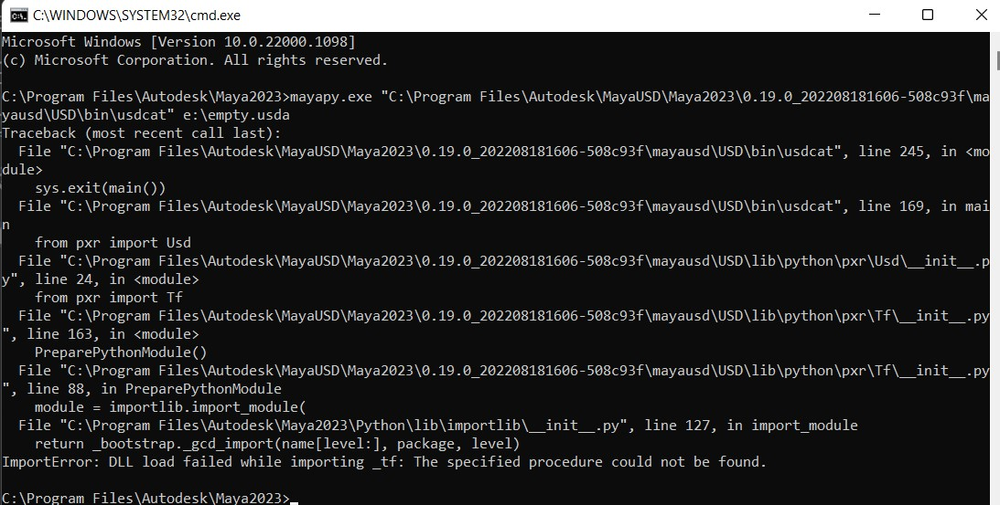

UsdView is a part of the USD toolset created by Pixar which combines interactive GL preview, navigation & introspection, a (growing) set of diagnostic or debugging facilities and an interactive python interpreter.
You can access UsdView with an installation of the MayaUSD plug-in and Maya. It can be accessed in two ways:
USDView needs an asset to view, hence, you need to select a USD asset in Maya before running this script.
Run the following python script from the Script Editor:
import maya.cmds as cmds
import ufe
from pxr import Usd
import mayaUsd as uLib
import os
import sys
import subprocess
if ufe.GlobalSelection.get().empty():
cmds.error('Select any ufe item under (and including) gateway node')
ufeItem = ufe.GlobalSelection.get().back()
stage = uLib.ufe.getStage(ufe.PathString.string(ufeItem.path()))
sdfLayer = stage.GetRootLayer()
if not sdfLayer.realPath:
cmds.error('Selected ufe item does not have a concrte layer path - is it an anonymous layer?')
mayaVer = int(cmds.about(q=True, majorVersion=True))
mayapyBinPath = os.path.join(os.environ['MAYA_LOCATION'], 'bin')
if mayaVer == 2022:
mayapyPath = os.path.join(mayapyBinPath, 'mayapy{ver}'.format(ver='' if sys.version_info.major == 3 else '2'))
else:
mayapyPath = os.path.join(mayapyBinPath, 'mayapy')
usdRootPath = os.environ['USD_LOCATION']
# sanitise the path separators - slightly inefficient
mayapyPath = mayapyPath.replace('\\', os.path.sep).replace('/', os.path.sep)
usdRootPath = usdRootPath.replace('\\', os.path.sep).replace('/', os.path.sep)
sdfLayerPath = sdfLayer.realPath.replace('\\', os.path.sep).replace('/', os.path.sep)
# finally build out the nice pathing
usdToolsPath = os.path.join(usdRootPath, "bin")
usdLibPath = os.path.join(usdRootPath, "lib")
usdViewPath = os.path.join(usdToolsPath, 'usdview')
# Install OpenGL module, if needed
try:
import OpenGL
except:
subprocess.check_call([mayapyPath, '-m', 'pip', 'install', 'PyOpenGL==3.1.0'])
if sys.platform in ('win32'):
creationflags = 0x08000000 # CREATE_NO_WINDOW only for win32, not MacOS or Linux
else:
creationflags = 0
print("Executing command\n {}".format(" ".join([mayapyPath, usdViewPath, sdfLayerPath])))
subprocess.Popen([mayapyPath, usdViewPath, sdfLayerPath], creationflags=creationflags)
For quick access, you can also add UsdView to a shelf button in Maya by selecting and dragging the text to the shelf.
For troubleshooting, if the command does not appear to run, there may be a library conflict due to other packages installed in your system path. To verify this please see the command shell instructions which provide more detail and configurability.
Compatibility Note: The version of MayaUSD shipped with Maya 2022 was built using python from Maya and
mayapy, so UsdView will run withmayapy.To run with Python 2, usemayapy2(instead of "mayapy") and change toUSD2(from “USD3”). UsdView is accessible for other versions of Maya. However, Maya 2022 provided dual support for python 2 and python 3.
The simplest way to set up an environment that matches the maya environment is to use the Script Editor to locate the paths to the USD toolset, launch a shell and use the commands from there:
import maya.cmds as cmds
import os
import sys
import subprocess
mayaVer = int(cmds.about(q=True, majorVersion=True))
if mayaVer == 2022:
mayapyPath = os.path.join(os.environ['MAYA_LOCATION'], 'bin', 'mayapy{ver}'.format(ver='' if sys.version_info.major == 3 else '2'))
else:
mayapyPath = os.path.join(os.environ['MAYA_LOCATION'], 'bin', 'mayapy')
usdRootPath = os.environ['USD_LOCATION']
# sanitise the path separators - slightly inefficient
mayapyPath = mayapyPath.replace('\\', os.path.sep).replace('/', os.path.sep)
usdRootPath = usdRootPath.replace('\\', os.path.sep).replace('/', os.path.sep)
# finally build out the nice pathing
usdToolsPath = os.path.join(usdRootPath, "bin")
usdLibPath = os.path.join(usdRootPath, "lib")
mayapyBinPath = os.path.dirname(mayapyPath)
path_divider = ";" if sys.platform in ('win32') else ":"
print(" usdtools: {}".format(usdToolsPath))
print("minimum path set: {}".format(path_divider.join([mayapyBinPath, usdToolsPath, usdLibPath])))
subprocess.Popen(['cmd']) # or powershell, bash, zsh, tcsh - your shell of choice
At the command shell you can then run the tools via the mayapy interpreter:

TROUBLESHOOTING: If you see errors about DLL/SO load failures: 
It is possible that your shell has additional paths, the minimum set of paths needed are:
The script will print these paths to the Script Editor.